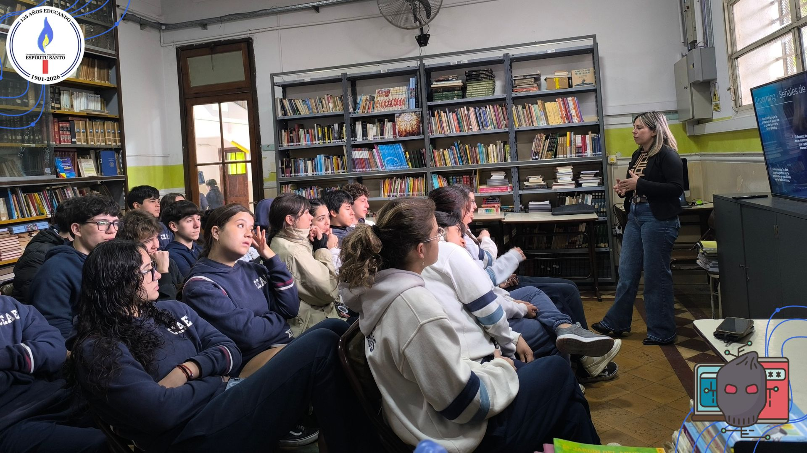
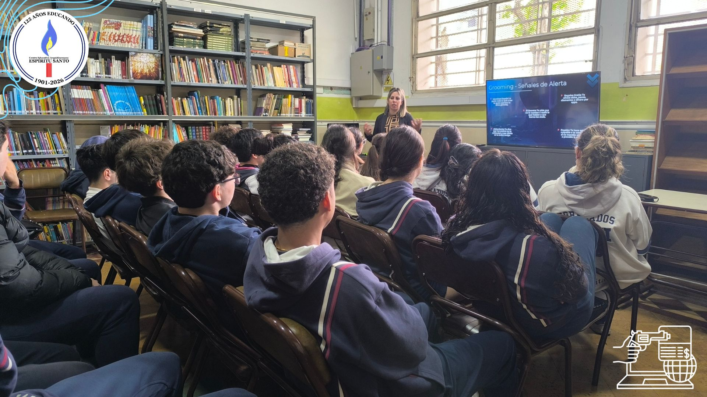

Charla sobre prevención de delitos informáticos de la Policia Federal para los alumnos de 5º A y B
Por Agustina Villareal, Francisco Lara y Miriam Marecos

El día Viernes 16 de octubre nos visitó una oficial de policía para hablarnos acerca de ciberdelitos, ciberbullying, sexting, grooming, y el uso de la IA. Primero empezó hablando de las redes sociales y del uso que cotidianamente le damos, de los usuarios y de las cuentas con las cuales interactuamos. También hablo sobre las cuentas anónimas que comentan cosas negativas en las redes, y dijo que en caso de que esa cuenta este cometiendo un delito, la policía fácilmente puede rastrear a la persona detrás de esa cuenta. Luego nos explicó el concepto de ciberbullying definiéndolo como el acoso que se produce de manera reiterada de una persona hacia otra a través de las redes sociales, videojuegos, etc. Lo que busca el agresor es humillar, perjudicar o hacerle daño a la víctima, generando así consecuencias emocionales en esta. Los espectadores de estas situaciones deberían de avisar a una autoridad para que esta intervenga en ella. Después nos habló del sexting que es enviar, recibir o intercambiar fotos o videos íntimos o sexuales a través de un celular, redes sociales, etc. Preferentemente estaría bueno no hacer esto, pero en caso de sí hacerlo hay que tener mucho cuidado de a quien le mandamos esto, tiene q ser una persona de mucha confianza, ya que estas fotos o videos se pueden divulgar muy fácilmente y pueden llegar a muchas personas. Esto genera pérdida de privacidad y posibles amenazas o extorsiones para conseguir algo a cambio. También vimos un video acerca de este tema, el cual mostraba a dos jóvenes que se enviaron fotos íntimas y estas le terminaron llegando a muchas personas, unas de ellas eran sus papas.

Habló del grooming y de no confiar o hacer relaciones con gente que no conocemos mediante las redes sociales o videojuegos. El grooming es cuando una persona adulta intenta de hacerse amigo o de formar una relación con un menor de edad a través de internet o de redes sociales con la intención de ganarse su confianza para manipularlo, engañarlo o conseguir contenido íntimo con fines sexuales. Un claro ejemplo es roblox, un juego que lo juegan muchos menores de edad y hay adultos que se aprovechan y se hacen pasar por menores diciéndoles que no cuenten a sus papás que hablan con ellos, y que los chantajean comprándoles monedas en ese juego. Vimos un video que mostraba a un nene y una nena que comenzaron a hablar por una red social y los dos tenían intenciones de juntarse. Acordaron un punto de encuentro para verse y cuando se vieron resulto ser que los dos eran ancianos. Esto muestra como un adulto se puede hacer pasar por un menor tranquilamente con malas intenciones. Finalmente cerró el encuentro hablando sobre casos en los que compañeros del colegio creaban imágenes íntimas o sexuales de sus compañeras con inteligencia artificial, subiéndolas a las redes sociales o compartiéndolas con sus amigos, haciéndose virales.